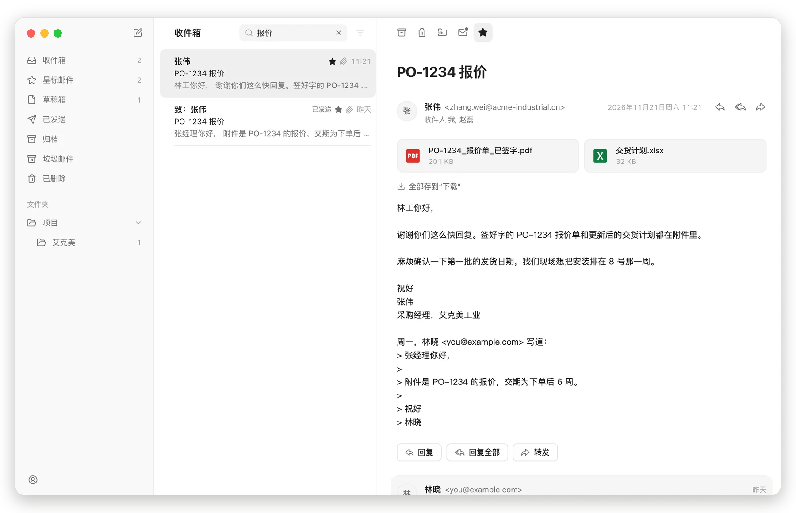
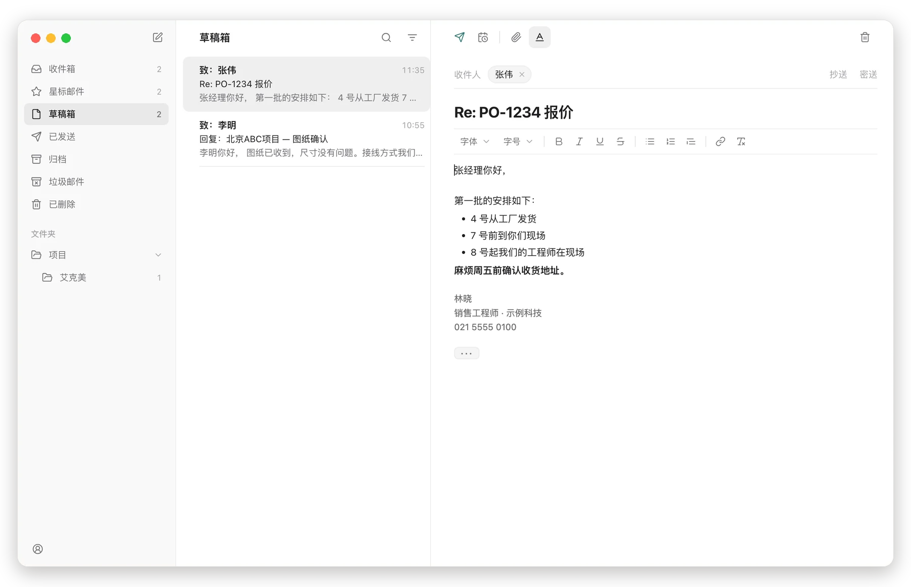

让 AI 助手真正用得上的邮件软件。
Ragdoll Mail 是一个桌面邮件软件，自带命令行。Claude Code、Codex，或者任何能跑命令的 AI，都可以帮你搜邮件、写回复。草稿会直接出现在软件里，你不点发送，就什么都不会发出去。
还没有苹果和微软的签名。第一次打开时：Mac 在 系统设置 → 隐私与安全性 里点“仍要打开”；Windows 点“更多信息 → 仍要运行”。
AI 来写草稿，发不发由你决定。
ragdoll 命令在软件里一键安装（设置 → 命令行）。每条命令都有 --json 输出，ragdoll --help 列出了全部用法，AI 自己看一遍就会用。 看命令行说明（英文） →
Jane 你好，PO-1234 签好的报价单见附件。麻烦周五前确认一下收货地址。
草稿就存在你的邮箱里
ragdoll draft 会把回复存进你邮箱的草稿箱，签名和之前的往来邮件都带上。在软件里、手机上或者别的邮件软件里都能打开。
发之前先检查一遍
ragdoll check 会拦下这些问题：标题是空的，正文说了“附件”却没加附件，还留着 [姓名] 这样的占位符，或者有乱码。
你不点头，就不会发
发送必须明确确认。一封草稿发出去以后，不会因为手滑再发第二次。
不用 API Key，不用 OAuth，没有调用额度
它直接用 IMAP 和 SMTP 连你自己的邮件服务器。密码存在系统钥匙串里，任何时候都不会显示出来。
搜索全在你自己的电脑上完成。
Ragdoll Mail 用 SQLite 在你的硬盘上给邮件建了一份全文索引。靠服务器搜索的工具就不一样了，每搜一次，都要先连上服务器、登录，再等服务器慢慢找。
2026 年 11 月 21 日在一台 MacBook 上实测，用的是一个有 5,044 封邮件的腾讯企业邮箱收件箱，搜的词是 “invoice”。服务器那一边每次都新建连接再发 IMAP SEARCH，命令行工具每次运行也是这样：登录 0.9 秒，搜索 0.13 秒。具体耗时会随服务器和网络变化。两个字的中文词在本地会慢一些，大约 0.08 秒。
就算不用 AI，日常收发也足够顺手。
每个词、每封邮件，一下就找到
标题、人名、附件名和正文都能搜，中文、英文、日文、韩文都行，断网也能搜。

邮件只在你手里
软件只和你自己的邮件服务器打交道，中间没有别家的云，也不用注册我们的账号。
想怎么写就怎么写
字体、列表、链接、签名都有。可以马上发，也可以定到今晚，或者周一早上九点。

中文邮件不乱码
老系统发来的中文名字和附件名，都能正常显示。
每个操作都有快捷键
C 写邮件，R 回复，E 归档。按 ? 看全部。
不会改动你的邮箱
文件夹和网页版、手机上的一模一样，原来的用法都不受影响。
和 AI 邮件软件、命令行工具比一比。
| Ragdoll Mail | Superhuman | Shortwave | Himalaya | Apple 邮件、Outlook | |
|---|---|---|---|---|---|
| 价格 | 免费 | 每月约 25 美元起 | 免费版 AI 有限额，另有付费版 | 免费 | 免费 |
| 支持的邮箱 | 任何 IMAP 邮箱 | Gmail 和 Outlook | 主要是 Gmail | 任何 IMAP 邮箱 | 大多数邮箱 |
| 桌面软件 | 有 | 有 | 有 | 没有，只能在终端里用 | 有 |
| AI 能用的命令行 | 有 | 没有 | 没有 | 有 | 没有 |
| 在哪里搜索 | 你的电脑 | 在线，经由 Gmail 或 Outlook | 在线，在 Shortwave 的服务器上 | 邮件服务器 | 看具体软件 |
| 开源 | 是 | 否 | 否 | 是 | 否 |
根据各产品公开页面整理，2026 年 11 月。哪里写错了或者过时了，欢迎到 GitHub 提 issue，我会改。 更多对比，包括 Foxmail、Thunderbird 和 Spark →
我想让 AI 帮我回邮件，可一直没找到合适的工具。
我每天要处理很多工作邮件，一直想让 Claude Code 帮我回。可做得好的 AI 邮件软件基本都是按月收费，一个月 25 到 30 美元，而且大多只支持 Gmail 和 Outlook。我的工作邮箱是腾讯企业邮箱，连试的机会都没有。
命令行邮件工具倒是有免费的，比如 Himalaya，但它每次搜索都交给邮件服务器去做。每搜一次都要走一趟网络，邮件越多越慢。有的服务器甚至根本不好好搜：我的邮箱不管输入什么词，都把整个文件夹的 5,044 封邮件原样返回。
所以我干脆自己做了一个：我用的是一个普通的邮件软件，AI 用的是一套命令行，两边搜的是同一份索引，就放在我自己的电脑上。
Eric Tan，Ragdoll Mail 作者
用你现在的邮箱就行。
你可能想问。
哪些 AI 助手能用？
能执行终端命令的都可以，比如 Claude Code、Codex、Cursor、Gemini CLI。AI 调用 ragdoll 命令的方式，跟你自己在终端里敲是一样的。
要 API Key 或者付费套餐吗？
不用。Ragdoll Mail 跟普通邮件软件一样，用 IMAP 和 SMTP 登录你的邮箱。不用申请 API Key，不用注册 OAuth 应用，也没有调用次数限制。
AI 会不会不问我就把邮件发出去？
不会误发。发送命令必须带上明确的确认才会执行，我们推荐的设置也会让 AI 先问你。大多数人的用法是：AI 写草稿，自己检查后点发送。
为什么不直接用邮件服务器的搜索？
服务器搜索每次都要走一趟网络，邮件越多越慢，有的服务器还几乎不怎么搜。本地索引几毫秒就有结果，断网也能用。
我的邮件安全吗？
邮件只存在两个地方：你的电脑，和你自己的邮件服务器。软件不会把任何东西发给我们，我们也没有服务器。
真的免费吗？
真的。没有广告，不用订阅，也不用注册。代码按 MIT 许可开源，谁都可以查它做了什么。